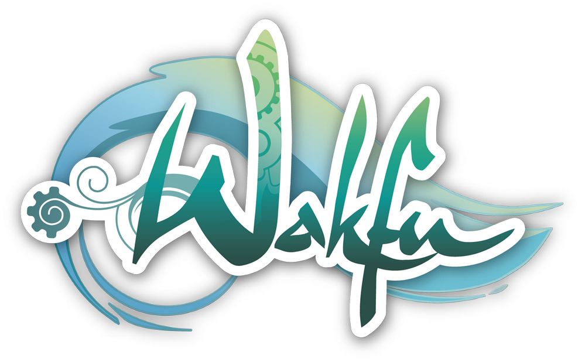

Accueil
Histoire
Autour de l'animé
Wakfu ce n'est pas seulement un animé mais il y a aussi des livres, des jeux, et une équipe qui travaille dessus.
Pour commencer: les équipes d'Ankama
Ankama est un entreprise française possédant ses studios à Roubaix dans le nord de la France.
En 2012 un jeu Wakfu fait sont apparition dont voici une vidéo de présentation: